° Porcentagem,
representada pelo símbolo %, é a divisão de um
número qualquer por 100. 50%, por exemplo, significa 50 partes
de um todo com 100.
°
Representações:
-
Fracionária: pode ser representada na forma irredutível ou com
denominador 100.
- Decimal:
encontrada a partir da divisão por 100.
→ Juros simples:
Se um capital C é aplicado durante t unidades e a taxa i de
juros por unidade de tempo incide apenas sobre o
capital inicial, j são os juros simples:
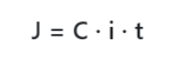
° Montante:
indica o valor do capital inicial somado aos juros:
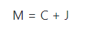
→ Juros compostos:
Os juros são calculados ao fim de cada período de tempo,
formando um montante sobre o
qual se calculam os juros do período seguinte:
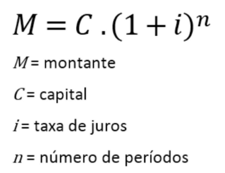
Nesse caso, os juros são dados pela diferença entre o montante e
o capital inicial (J = M - C)
Exercícios de porcentagem no enem:
Estatística
→ Princípios:
° População:
conjunto formado por todos elementos que participam
de um determinado tema pesquisado.
° Dado
estatístico: um determinado elemento que pertence ao
conjunto da população.
° Amostra:
subconjunto formado com base na e que representa a
população.
° Variável:
objeto de estudo da pesquisa, o tema.
° Rol: forma de
organizar dados de variáveis quantitativas.
° Média:
Considere o rol com os elementos (a1, a2, a3, a4, …, an),
a média aritmética desses n elementos é dada por:
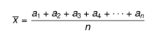
° Moda:
Chamaremos de moda o elemento do rol que possui maior
frequência, ou seja, o elemento que mais aparece nele.
° Mediana: A mediana é dada pelo
elemento central de um rol que
possui uma quantidade ímpar de elementos. Caso o rol possua uma
quantidade par de elementos, devemos considerar os dois
elementos centrais e calcular a média aritmética entre eles.
Para o caso de ser par e serem dois números, basta somá-los e
dividir por 2.
→ Medidas de dispersão: indicam o quanto os elementos de um rol
numérico estão afastados da média aritmética. São duas as
medidas:
° Variância
(σ²): média aritmética dos quadrados da diferença
entre cada elemento do rol e a média aritmética desse rol.
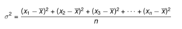
° Desvio padrão
(σ): dado pela raiz da variância, ele nos indica o
quanto um elemento está disperso em relação à média.
Geometria espacial: corpos redondos
→ Cilindro:
° Fórmulas:
- Área da base:
- Área lateral:
- Área total:
- Volume:
→ Cone:
° Fórmulas:
- Área da base:
- Área lateral:
-
O g indica a geratriz, ou seja, a lateral formada por qualquer
segmento que tenha uma extremidade no vértice e a outra na base
do cone.
- Área total:
- Volume:
→ Esfera:
° Partes da
esfera:
- Superfície
esférica: corresponde ao conjunto de pontos do espaço
onde a distância do centro (O) é equivalente ao raio (R).
- Fuso esférico:
é a parte da superfície esférica que se obtém ao
girar uma semicircunferência em um ângulo em torno do eixo que
contém o diâmetro.
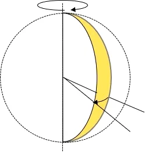
° Fórmulas
- Área:
Números complexos
→ Definição: números compostos por uma parte real e uma
imaginária. Representam o conjunto de todos os pares ordenados
(x, y), cujos elementos pertencem ao conjunto dos números reais.
→ Unidade imaginária (i): representa o par ordenado (0, 1):
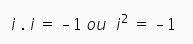
De forma i é a raiz quadrada de -1:
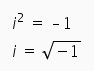
→ Representação algébrica de um polinômio z:
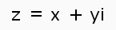
Em que:
° x é um número
real indicado por: x = Re (Z); parte real de z.
° y é um número
real indicado por: y = Im (Z); parte imaginária de z.
→ Conjugado de um número complexo: é a parte imaginária com o
sinal trocado:
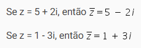
→ Operações: Sendo dois números complexos Z1 = (a, b) e Z2 = (c,
d), temos:
° Igualdade: (a,
b) = (c, d) ↔ a = c e b = d
° Adição: (a +
bi) + (c + di) = (a + c) + i (b + d)
° Subtração: (a
+ bi) – (c + di) = (a – c) + i (b – d)
° Multiplicação:
utilizá-se a distributiva: (a + bi) . (c + di) = ac + adi + bci
+ bdi²
° Divisão:
considerando,
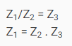
Polinômios
→ Definição: Os polinômios são expressões algébricas formadas
por números (coeficientes) e letras (partes literais). As letras
de um polinômio representam os valores desconhecidos da
expressão.
→ Tipos de polinômios:
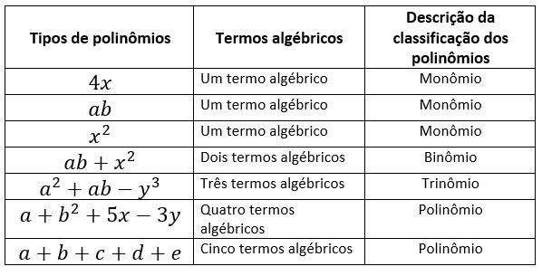
→ Grau dos polinômios: O grau de um polinômio é dado pelos
expoentes da parte literal, de forma que o maior expoente indica
o grau. Em 2x² + y, por exemplo, o grau é 2.
→ Valor numérico de um polinômio: considerando a função
polinomial f(x) = x³ + 2x² + 6x + 18, avaliar f em 1, ou seja, f(1), nada mais é que fazer f(1) = 1³ + 2 . (1)² + 6 . (1) + 18